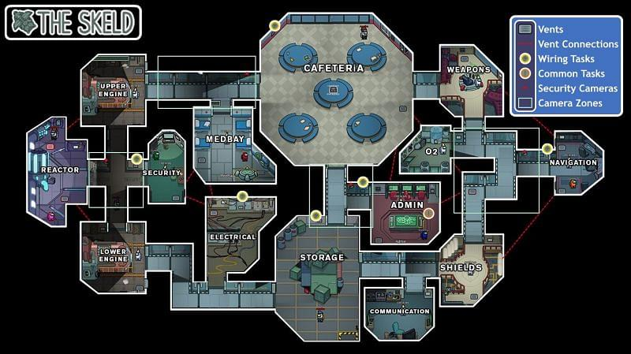
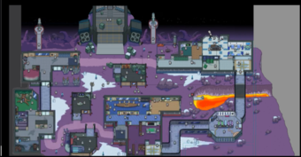

Gaming_HD45's Website Among Us tips
And Please Subscribe my youtube channel! Just click the image below
Gaming_HD45.

Dont fake visual task if you dont know the trick
Changing your date to 25 des 2018 or 1 - 31 oct can give you some free hats in among us
Now you can fake some visual tasks in among us on beta version.
but keep in mind :
the settings must be =
update taskbar : never/meetings
Visual Tasks : off
changing ur color to orange can make you got more chance to be an impostor
you need to know some tasks you should not fake,that is common tasks and visual tasks
Visual tasks in every maps =

The Skeld =
Medbay : Submit scan (show green thingy)
Weapon : Clear Asteroids (0/20) (look at right side of weapon and it will firing something)
Storage : Empty Garbage/Chute (1/2) (the garbages will comes out from the skeld)
Shield : Prime Shield (look at lamp outside the shield, it will turned on once you did the task)

MIRA HQ =
Medbay : Submit Scan (show a green thingy)

Polus =
Weapon : Clear asteroids (0/20) (look at the weapon on outside weapon, it will shoot somthing
Medbay : Submit Scan (show a green thingy)
Common task in every maps =
The skeld =
Admin : Swipe Card
anywhere : fix wiring (0/3)
MIRA HQ =
Admin : Enter ID Code
anywhere : fix wiring (0/3)
Polus =
Dropship : Insert Key
anywhere : Fix Wiring (0/3)
Office : Swipe Card
Office : Scan Boarding pass
Common tasks means task for every crewmates
if you have wiring, all ppl have it. if you have swipe card, all ppl have it
[if you are crewmate] so watch out for ppl who doesnt do/faked a common task you have (only suspect on them)
[if you are impostor] you also must pretending to do common task on a stack except wiring
its called meta common task
meta = most effective tactics available
you must watch the room settings too before playing the game
A tip for if u wanna become a imposter just keep switching hats continuesly in the lobby until it starts don’t stop until your finally in the round
not just hats, you can do it with skins, pets, or colors also
And another is that u type this in chat %imposter=100% then you will be imposter but not always if u use it too much then it will surely not work
- Owner media Profiles
Gaming_HD45's Webpage
Copyright © 2020 Gaming_HD45